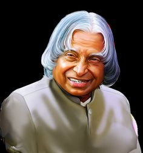

1931-2015
"If you Want to Shine Like a Sun, First Burn Like a Sun."
A.P.J. Abdul Kalam, in full Avul Pakir Jainulabdeen Abdul Kalam, (born October 15, 1931, Rameswaram, India—died July 27, 2015, Shillong), Indian scientist and politician who played a leading role in the development of India's missile and nuclear weapons programs.
Kalam earned a degree in aeronautical engineering from the Madras Institute of Technology and in 1958 joined the Defence Research and Development Organisation (DRDO). In 1969 he moved to the Indian Space Research Organisation, where he was project director of the SLV-III, the first satellite launch vehicle that was both designed and produced in India. Rejoining DRDO in 1982, Kalam planned the program that produced a number of successful missiles, which helped earn him the nickname “Missile Man.” Among those successes was Agni, India's first intermediate-range ballistic missile, which incorporated aspects of the SLV-III and was launched in 1989.
A.P.J. Abdul Kalam served as president of the Republic of India from 2002 to 2007. As president, Kalam promoted the advancement of the national nuclear weapons program. Kalam also devised a 20-year action plan to achieve economic growth through technological development in India.